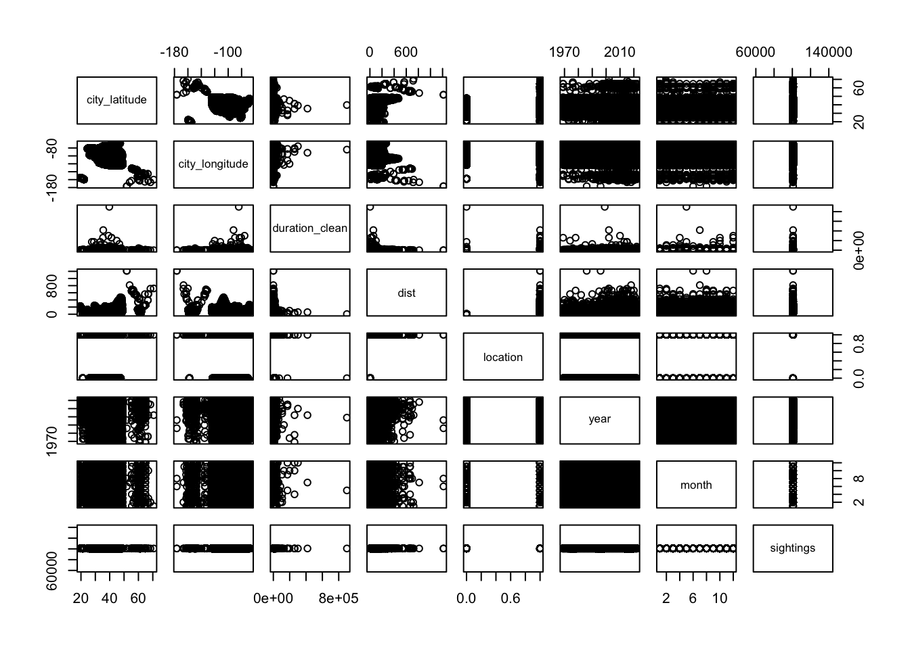
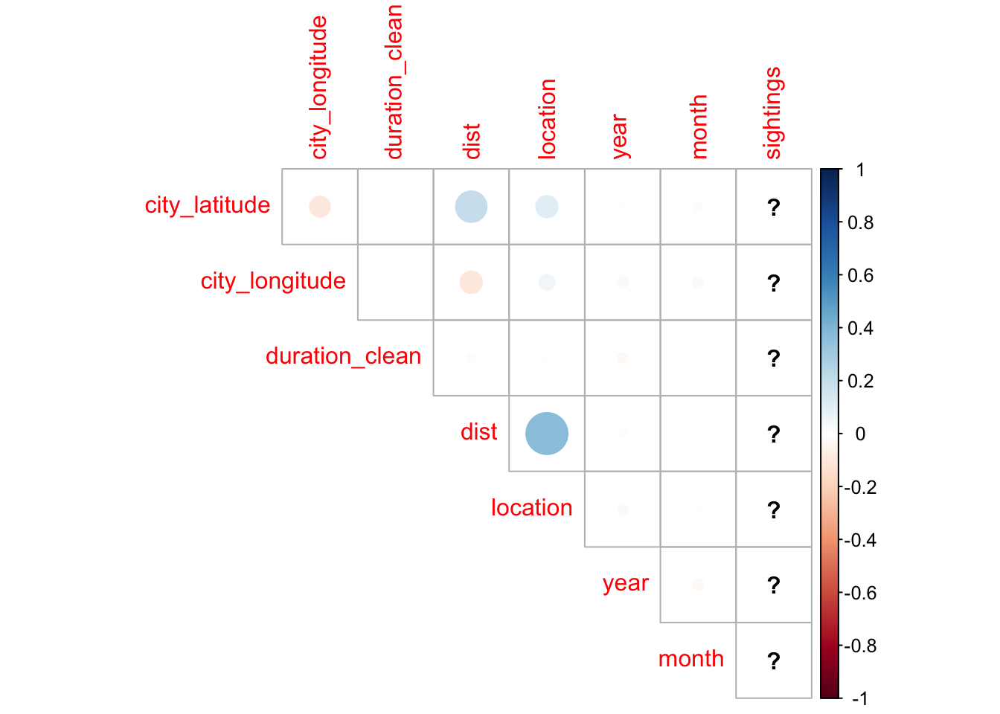
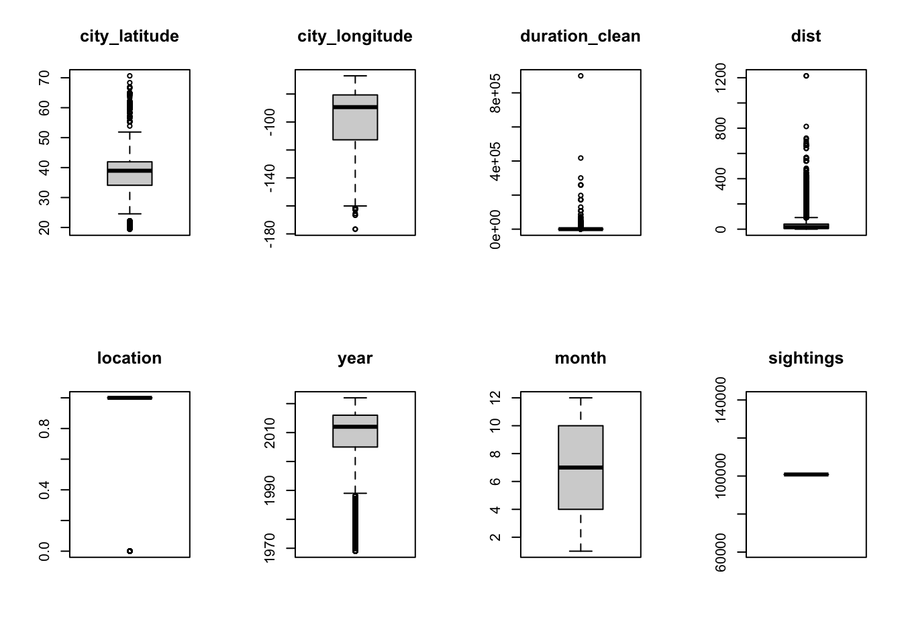

ufo = read_csv("./data/ufo_clean.csv")## Rows: 100802 Columns: 13
## ── Column specification ────────────────────────────────────────────────────────
## Delimiter: ","
## chr (7): city, state, shape, duration, text, closest_city, location
## dbl (4): city_latitude, city_longitude, duration_clean, dist
## dttm (2): date_time, posted
##
## ℹ Use `spec()` to retrieve the full column specification for this data.
## ℹ Specify the column types or set `show_col_types = FALSE` to quiet this message.summary(ufo)## city state date_time
## Length:100802 Length:100802 Min. :1969-01-01 10:00:00.00
## Class :character Class :character 1st Qu.:2005-04-16 23:52:30.00
## Mode :character Mode :character Median :2012-02-20 11:25:00.00
## Mean :2010-01-04 18:58:01.19
## 3rd Qu.:2016-02-29 00:45:00.00
## Max. :2022-12-22 09:29:00.00
##
## shape duration text
## Length:100802 Length:100802 Length:100802
## Class :character Class :character Class :character
## Mode :character Mode :character Mode :character
##
##
##
##
## posted city_latitude city_longitude
## Min. :1998-03-07 00:00:00.0 Min. :19.44 Min. :-176.63
## 1st Qu.:2006-10-30 00:00:00.0 1st Qu.:34.09 1st Qu.:-112.44
## Median :2012-08-05 00:00:00.0 Median :38.95 Median : -89.38
## Mean :2011-10-18 13:03:26.5 Mean :38.29 Mean : -95.21
## 3rd Qu.:2016-08-02 00:00:00.0 3rd Qu.:41.92 3rd Qu.: -80.65
## Max. :2022-12-22 00:00:00.0 Max. :70.64 Max. : -67.00
##
## duration_clean closest_city dist location
## Min. : 0.0 Length:100802 Min. : 0.1085 Length:100802
## 1st Qu.: 30.0 Class :character 1st Qu.: 5.3484 Class :character
## Median : 180.0 Mode :character Median : 16.6650 Mode :character
## Mean : 855.6 Mean : 31.4919
## 3rd Qu.: 600.0 3rd Qu.: 40.3084
## Max. :900000.0 Max. :1214.9520
## NA's :11522str(ufo)## spc_tbl_ [100,802 × 13] (S3: spec_tbl_df/tbl_df/tbl/data.frame)
## $ city : chr [1:100802] "Hamden" "Charlottesville" "Lincoln Park" "San jacinto" ...
## $ state : chr [1:100802] "CT" "VA" "MI" "CA" ...
## $ date_time : POSIXct[1:100802], format: "2019-06-23 20:00:00" "2019-06-20 23:28:00" ...
## $ shape : chr [1:100802] "light" "circle" "light" "sphere" ...
## $ duration : chr [1:100802] "5 hours" "15 seconds" "2 minutes" "25 seconds" ...
## $ text : chr [1:100802] "Steady flashing object with three lights hovered in sky \n \nSaw three bright lights in a row - the actual sh"| __truncated__ "Group of several orange lights, seemingly circular. Lights did not blink. \n \nObject appeared to be like a "| __truncated__ "Dropped in flashed a few times and shot off 5 or 6 balls of light, then shot back up extermly fast. Taking the"| __truncated__ "Looked like a star at first glance, got brighter and bigger, then dimmer and small again. It was stationary th"| __truncated__ ...
## $ posted : POSIXct[1:100802], format: "2019-06-27" "2019-06-27" ...
## $ city_latitude : num [1:100802] 41.4 38.1 42.2 33.8 47.7 ...
## $ city_longitude: num [1:100802] -72.9 -78.5 -83.2 -116.9 -117.1 ...
## $ duration_clean: num [1:100802] 18000 15 120 25 2700 300 NA NA 8 20 ...
## $ closest_city : chr [1:100802] "New Haven" "Richmond" "Detroit" "Moreno Valley" ...
## $ dist : num [1:100802] 4.33 66.43 10.73 17.14 15.25 ...
## $ location : chr [1:100802] "urban" "rural" "rural" "rural" ...
## - attr(*, "spec")=
## .. cols(
## .. city = col_character(),
## .. state = col_character(),
## .. date_time = col_datetime(format = ""),
## .. shape = col_character(),
## .. duration = col_character(),
## .. text = col_character(),
## .. posted = col_datetime(format = ""),
## .. city_latitude = col_double(),
## .. city_longitude = col_double(),
## .. duration_clean = col_double(),
## .. closest_city = col_character(),
## .. dist = col_double(),
## .. location = col_character()
## .. )
## - attr(*, "problems")=<externalptr>ufo_subset = ufo |>
mutate(year = format(date_time, "%Y"),
month = format(date_time, "%m"),
sightings = n(),
location = factor(location, levels = c("urban", "rural")),
location = as.numeric(location) - 1,
duration_clean = as.numeric(duration_clean),
year = as.numeric(year),
month = as.numeric(month),
sightings = as.numeric(sightings)) |>
filter(!is.na(duration_clean)) |>
select(city_latitude, city_longitude, duration_clean, dist, location, year, month, sightings)pairs(ufo_subset)
corrplot(cor(ufo_subset), type = "upper", diag = FALSE)## Warning in cor(ufo_subset): the standard deviation is zero
# Boxplots for each variable
par(mfrow = c(2, 4))
boxplot(ufo_subset$city_latitude, main = 'city_latitude')
boxplot(ufo_subset$city_longitude, main = 'city_longitude')
boxplot(ufo_subset$duration_clean, main = 'duration_clean')
boxplot(ufo_subset$dist, main = 'dist')
boxplot(ufo_subset$location, main = 'location')
boxplot(ufo_subset$year, main = 'year')
boxplot(ufo_subset$month, main = 'month')
boxplot(ufo_subset$sightings, main = 'sightings')
# fit regression using all predictors
mult.fit = lm(sightings ~., data = ufo_subset)
summary(mult.fit)##
## Call:
## lm(formula = sightings ~ ., data = ufo_subset)
##
## Residuals:
## Min 1Q Median 3Q Max
## -5.714e-05 -1.000e-09 0.000e+00 2.000e-09 4.670e-07
##
## Coefficients:
## Estimate Std. Error t value Pr(>|t|)
## (Intercept) 1.008e+05 1.402e-07 7.192e+11 < 2e-16 ***
## city_latitude -1.038e-10 1.191e-10 -8.720e-01 0.383307
## city_longitude -4.995e-11 3.601e-11 -1.387e+00 0.165490
## duration_clean -5.162e-13 1.381e-13 -3.738e+00 0.000186 ***
## dist -7.763e-13 1.592e-11 -4.900e-02 0.961115
## location 3.020e-09 1.622e-09 1.862e+00 0.062601 .
## year -7.808e-11 6.963e-11 -1.121e+00 0.262169
## month 5.554e-11 1.972e-10 2.820e-01 0.778258
## ---
## Signif. codes: 0 '***' 0.001 '**' 0.01 '*' 0.05 '.' 0.1 ' ' 1
##
## Residual standard error: 1.913e-07 on 89272 degrees of freedom
## Multiple R-squared: 0.5, Adjusted R-squared: 0.5
## F-statistic: 1.275e+04 on 7 and 89272 DF, p-value: < 2.2e-16# Take out non-significant variables one at a time starting with the highest p-value
# No dist
step1 = update(mult.fit, . ~ . -dist)
summary(step1)##
## Call:
## lm(formula = sightings ~ city_latitude + city_longitude + duration_clean +
## location + year + month, data = ufo_subset)
##
## Residuals:
## Min 1Q Median 3Q Max
## -5.714e-05 -1.000e-09 0.000e+00 2.000e-09 4.670e-07
##
## Coefficients:
## Estimate Std. Error t value Pr(>|t|)
## (Intercept) 1.008e+05 1.401e-07 7.193e+11 < 2e-16 ***
## city_latitude -1.048e-10 1.173e-10 -8.940e-01 0.371414
## city_longitude -4.974e-11 3.577e-11 -1.391e+00 0.164344
## duration_clean -5.163e-13 1.381e-13 -3.739e+00 0.000185 ***
## location 2.991e-09 1.507e-09 1.984e+00 0.047274 *
## year -7.801e-11 6.962e-11 -1.121e+00 0.262462
## month 5.558e-11 1.972e-10 2.820e-01 0.778095
## ---
## Signif. codes: 0 '***' 0.001 '**' 0.01 '*' 0.05 '.' 0.1 ' ' 1
##
## Residual standard error: 1.913e-07 on 89273 degrees of freedom
## Multiple R-squared: 0.5, Adjusted R-squared: 0.5
## F-statistic: 1.488e+04 on 6 and 89273 DF, p-value: < 2.2e-16# No month
step2 = update(step1, . ~ . -month)
summary(step2)##
## Call:
## lm(formula = sightings ~ city_latitude + city_longitude + duration_clean +
## location + year, data = ufo_subset)
##
## Residuals:
## Min 1Q Median 3Q Max
## -5.714e-05 -1.000e-09 0.000e+00 2.000e-09 4.670e-07
##
## Coefficients:
## Estimate Std. Error t value Pr(>|t|)
## (Intercept) 1.008e+05 1.401e-07 7.198e+11 < 2e-16 ***
## city_latitude -1.041e-10 1.172e-10 -8.880e-01 0.374531
## city_longitude -4.948e-11 3.576e-11 -1.384e+00 0.166424
## duration_clean -5.164e-13 1.381e-13 -3.739e+00 0.000185 ***
## location 2.991e-09 1.507e-09 1.984e+00 0.047257 *
## year -7.855e-11 6.959e-11 -1.129e+00 0.258999
## ---
## Signif. codes: 0 '***' 0.001 '**' 0.01 '*' 0.05 '.' 0.1 ' ' 1
##
## Residual standard error: 1.913e-07 on 89274 degrees of freedom
## Multiple R-squared: 0.5, Adjusted R-squared: 0.5
## F-statistic: 1.785e+04 on 5 and 89274 DF, p-value: < 2.2e-16# No city_latitude
step3 = update(step2, . ~ . -city_latitude)
summary(step3)##
## Call:
## lm(formula = sightings ~ city_longitude + duration_clean + location +
## year, data = ufo_subset)
##
## Residuals:
## Min 1Q Median 3Q Max
## -5.714e-05 -1.000e-09 0.000e+00 2.000e-09 4.670e-07
##
## Coefficients:
## Estimate Std. Error t value Pr(>|t|)
## (Intercept) 1.008e+05 1.399e-07 7.203e+11 < 2e-16 ***
## city_longitude -4.644e-11 3.559e-11 -1.305e+00 0.192027
## duration_clean -5.163e-13 1.381e-13 -3.739e+00 0.000185 ***
## location 2.847e-09 1.499e-09 1.899e+00 0.057505 .
## year -7.793e-11 6.959e-11 -1.120e+00 0.262779
## ---
## Signif. codes: 0 '***' 0.001 '**' 0.01 '*' 0.05 '.' 0.1 ' ' 1
##
## Residual standard error: 1.913e-07 on 89275 degrees of freedom
## Multiple R-squared: 0.5, Adjusted R-squared: 0.5
## F-statistic: 2.232e+04 on 4 and 89275 DF, p-value: < 2.2e-16# No year
step4 = update(step3, . ~ . -year)
summary(step4)##
## Call:
## lm(formula = sightings ~ city_longitude + duration_clean + location,
## data = ufo_subset)
##
## Residuals:
## Min 1Q Median 3Q Max
## -5.714e-05 0.000e+00 0.000e+00 1.000e-09 4.650e-07
##
## Coefficients:
## Estimate Std. Error t value Pr(>|t|)
## (Intercept) 1.008e+05 3.686e-09 2.735e+13 < 2e-16 ***
## city_longitude -4.740e-11 3.558e-11 -1.332e+00 0.182785
## duration_clean -5.131e-13 1.381e-13 -3.716e+00 0.000202 ***
## location 2.808e-09 1.498e-09 1.874e+00 0.060880 .
## ---
## Signif. codes: 0 '***' 0.001 '**' 0.01 '*' 0.05 '.' 0.1 ' ' 1
##
## Residual standard error: 1.913e-07 on 89276 degrees of freedom
## Multiple R-squared: 0.5, Adjusted R-squared: 0.5
## F-statistic: 2.976e+04 on 3 and 89276 DF, p-value: < 2.2e-16# just use one function
step(mult.fit, direction = 'backward')## Start: AIC=-2762254
## sightings ~ city_latitude + city_longitude + duration_clean +
## dist + location + year + month## Warning: attempting model selection on an essentially perfect fit is nonsense## Df Sum of Sq RSS AIC
## - dist 1 9.0000e-17 3.2655e-09 -2762256
## - month 1 2.9000e-15 3.2655e-09 -2762256
## - city_latitude 1 2.7800e-14 3.2655e-09 -2762255
## - year 1 4.5990e-14 3.2655e-09 -2762254
## - city_longitude 1 7.0350e-14 3.2655e-09 -2762254
## <none> 3.2655e-09 -2762254
## - location 1 1.2683e-13 3.2656e-09 -2762252
## - duration_clean 1 5.1101e-13 3.2660e-09 -2762242
##
## Step: AIC=-2762256
## sightings ~ city_latitude + city_longitude + duration_clean +
## location + year + month## Warning: attempting model selection on an essentially perfect fit is nonsense## Df Sum of Sq RSS AIC
## - month 1 2.9000e-15 3.2655e-09 -2762258
## - city_latitude 1 2.9220e-14 3.2655e-09 -2762257
## - year 1 4.5930e-14 3.2655e-09 -2762256
## - city_longitude 1 7.0740e-14 3.2655e-09 -2762256
## <none> 3.2655e-09 -2762256
## - location 1 1.4396e-13 3.2656e-09 -2762254
## - duration_clean 1 5.1129e-13 3.2660e-09 -2762244
##
## Step: AIC=-2762258
## sightings ~ city_latitude + city_longitude + duration_clean +
## location + year## Warning: attempting model selection on an essentially perfect fit is nonsense## Df Sum of Sq RSS AIC
## - city_latitude 1 2.8840e-14 3.2655e-09 -2762259
## - year 1 4.6600e-14 3.2655e-09 -2762258
## - city_longitude 1 7.0040e-14 3.2655e-09 -2762258
## <none> 3.2655e-09 -2762258
## - location 1 1.4398e-13 3.2656e-09 -2762256
## - duration_clean 1 5.1146e-13 3.2660e-09 -2762246
##
## Step: AIC=-2762259
## sightings ~ city_longitude + duration_clean + location + year## Warning: attempting model selection on an essentially perfect fit is nonsense## Df Sum of Sq RSS AIC
## - year 1 4.5870e-14 3.2655e-09 -2762260
## - city_longitude 1 6.2260e-14 3.2655e-09 -2762259
## <none> 3.2655e-09 -2762259
## - location 1 1.3197e-13 3.2656e-09 -2762257
## - duration_clean 1 5.1124e-13 3.2660e-09 -2762247
##
## Step: AIC=-2762260
## sightings ~ city_longitude + duration_clean + location## Warning: attempting model selection on an essentially perfect fit is nonsense## Df Sum of Sq RSS AIC
## - city_longitude 1 6.4920e-14 3.2656e-09 -2762260
## <none> 3.2655e-09 -2762260
## - location 1 1.2851e-13 3.2657e-09 -2762258
## - duration_clean 1 5.0519e-13 3.2660e-09 -2762248
##
## Step: AIC=-2762260
## sightings ~ duration_clean + location## Warning: attempting model selection on an essentially perfect fit is nonsense## Df Sum of Sq RSS AIC
## <none> 3.2656e-09 -2762260
## - location 1 1.1983e-13 3.2657e-09 -2762258
## - duration_clean 1 5.0499e-13 3.2661e-09 -2762248##
## Call:
## lm(formula = sightings ~ duration_clean + location, data = ufo_subset)
##
## Coefficients:
## (Intercept) duration_clean location
## 1.008e+05 -5.130e-13 2.708e-09